Your MiSTer, as a console.
Phosphor is unofficial custom firmware for the SuperStation One, built on mainline MiSTer and its Linux. Pick up a controller and your games are there with box art, ready to play. Memory cards, Bluetooth, WiFi and saves are a few button presses away, on the TV or on your phone.
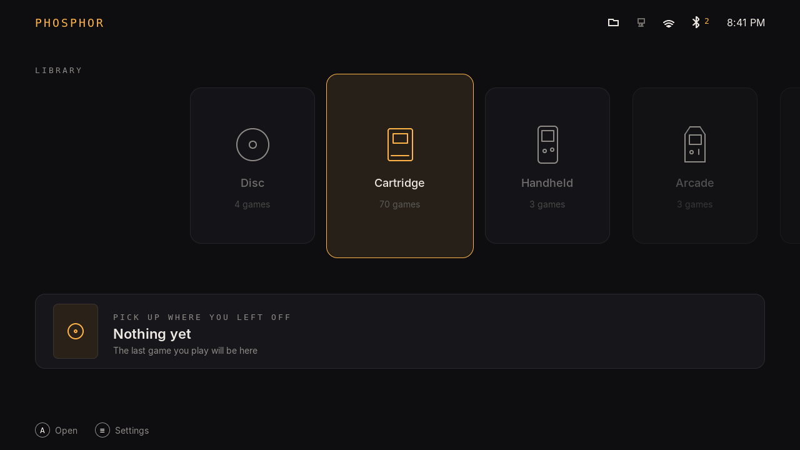
Everything from the couch
These are real screens, drawn by Phosphor's own code at 1280 by 720. On a 1080p TV it draws every pixel at 1080p.
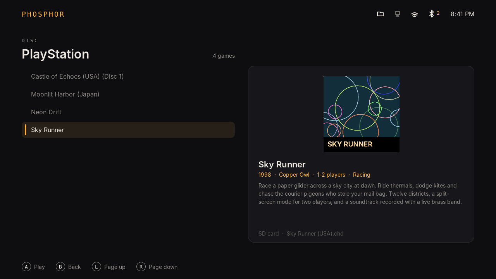
Your library, found for you
Phosphor finds the games on the SD card, a USB drive, NVMe or a network share, works out what each one is, and fetches box art and details from sources you choose.
Hacks and translations can point at the game they're based on and share its art.
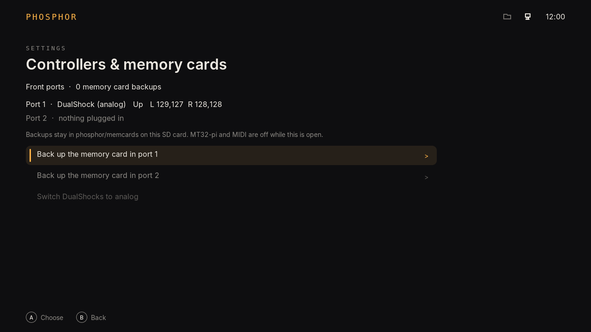
Memory cards from the front ports
Back up a PlayStation memory card to the SD card, or put a backup on a card. The card is always backed up first.
The ports are only read while this screen is open. The rest of the time they belong to your games, the way MiSTer intends.
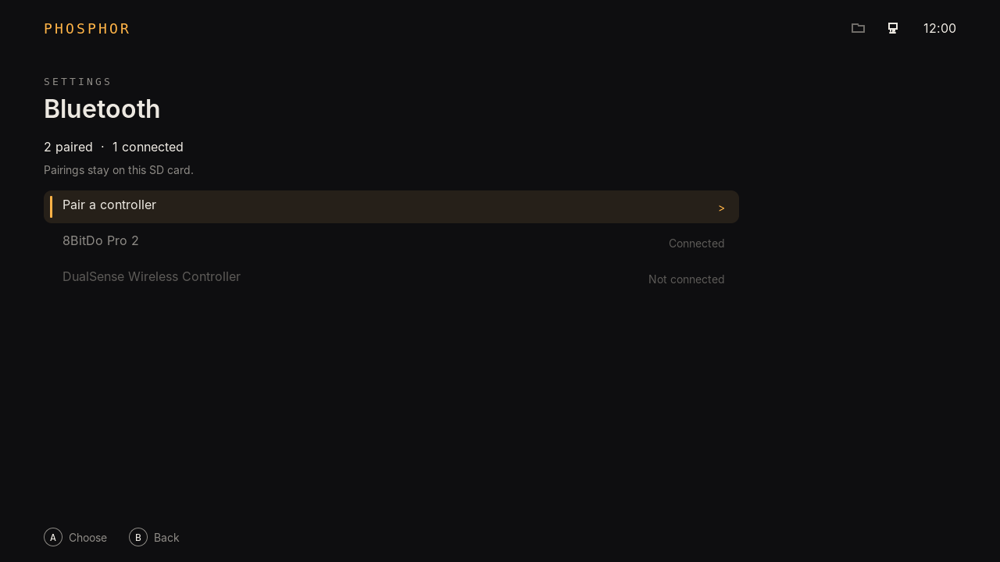
Bluetooth and WiFi without a keyboard
Pair a controller by putting it in pairing mode. Join a network with the on-screen keyboard. Both use MiSTer's own setup, so nothing is set up twice.
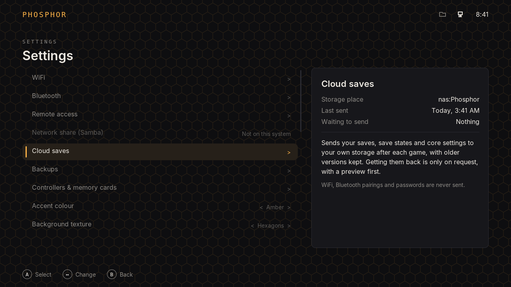
Settings that explain themselves
Move down the list and the panel beside it follows: what each setting is set to right now, and what it's for, in plain words.
Each status is asked for once, when you stop on a row. Nothing is polled while you look.
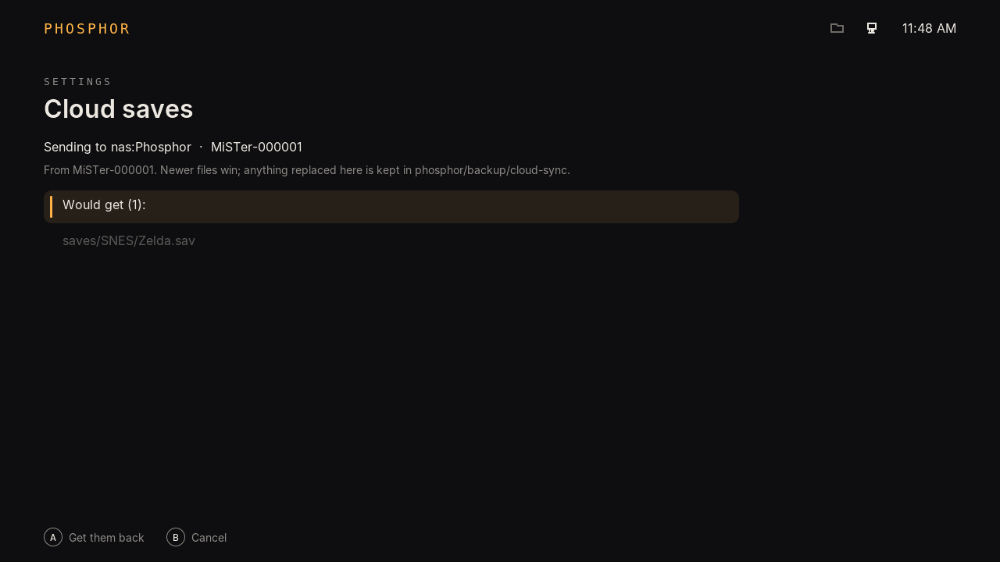
Saves kept safe
Backups of saves and settings on the SD card, NVMe or your NAS, taken when you leave a game and once a day. Cloud saves to your own WebDAV, SFTP, SMB, Google Drive, Dropbox or OneDrive, shared between MiSTers if you like.
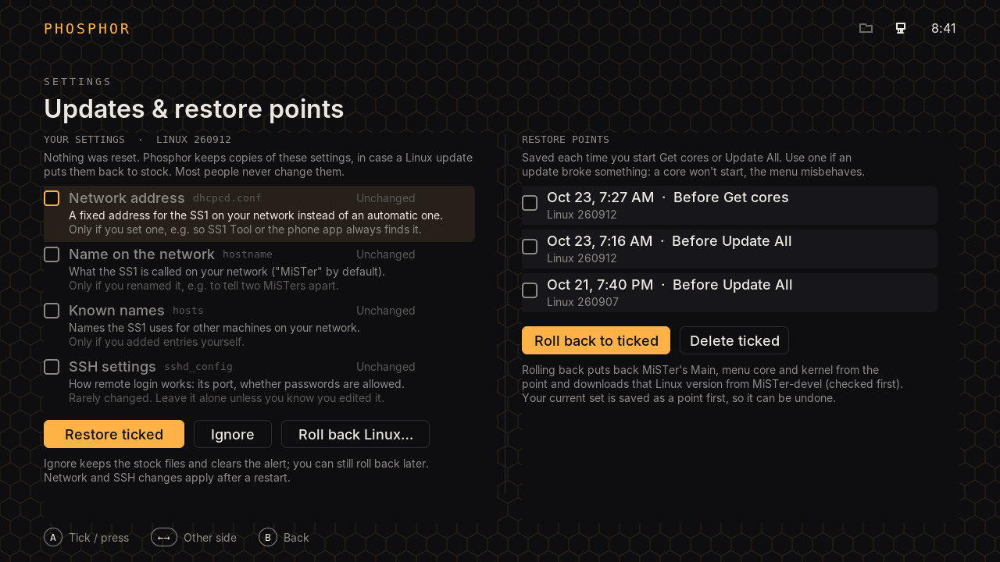
Updates you can undo
Update and Update All run exactly as MiSTer runs them, with a restore point saved first. If an update breaks something, roll back: Main, the menu core and Linux come back, with Linux downloaded from MiSTer-devel and checked before use.
If a Linux update puts your network address or SSH settings back to stock, Phosphor says so and puts them back when you ask.
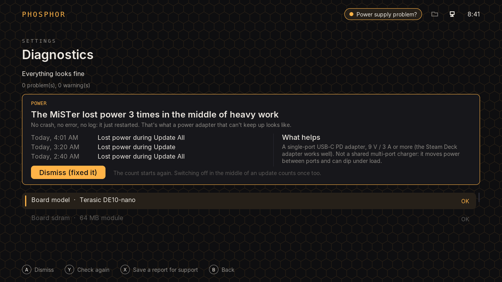
It knows when it's the power
A power adapter that can't keep up resets the MiSTer instantly under load. No crash, no error, no log, so it usually costs an evening of guessing. Phosphor uses that silence: heavy work that never finished, with no normal shutdown in between, means the power went.
After three, it tells you and says what helps. Switching off while idle is never counted. The events in this picture are an example.
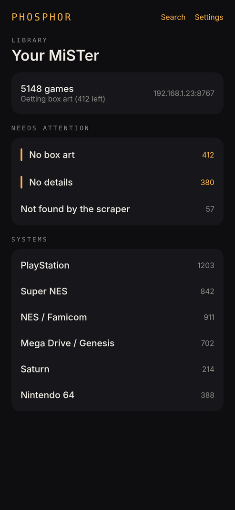
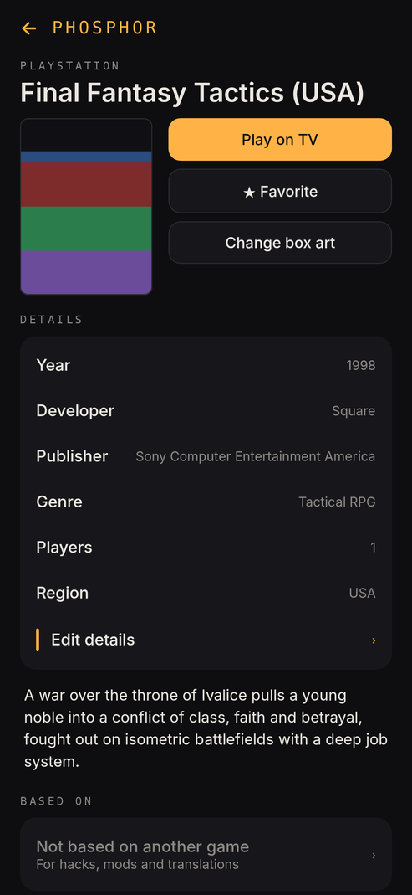
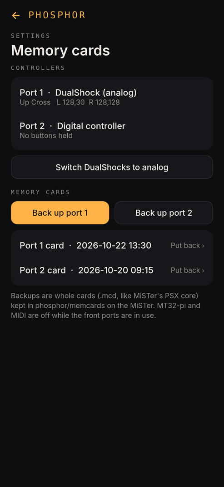
A phone app for the fiddly parts
Paired with a code on your home network: browse the library, fix box art with a photo, edit details, start a game on the TV, manage saves, memory cards and Bluetooth.
Custom firmware on mainline MiSTer
Phosphor follows MiSTer-devel's mainline releases: the same Linux and kernel, kept current the usual way. Its own layers sit above them, and MiSTer's own menu is always one button away.
- MiSTer LinuxStock, from MiSTer-devel, updated the usual way.
- MiSTer Main + Phosphor's APIMiSTer's own program, plus a small local interface so Phosphor can work with it instead of around it.
- Menu core + front portsMiSTer's menu core, plus PlayStation controller and memory card access, off until Phosphor asks.
- phosphord and modulesThe library, box art, backups, cloud saves, restore points and health checks. Each does its work when you ask, not on a timer.
- Phosphor and the phone appWhat you see and hold.
Phosphor's parts. The changes to MiSTer's own programs will be published under the GPL, like MiSTer.
How it treats your system
A few rules everything in Phosphor follows.
Your settings stay home
WiFi passwords and Bluetooth pairings live on the SuperStation One, your phone, NVMe or NAS. Never on the internet.
A backup before every change
Anything Phosphor changes is backed up first and can be put back from the same screen.
Only when you press the button
Nothing installs, updates or rewrites itself. Cores are yours to manage. Looking for games and fetching box art start when you choose them.
Quiet in the menu
The DE10-Nano has one small CPU and a modest power budget. Phosphor sleeps between button presses, so the menu idles well under 20% CPU and an update gets the machine to itself.
Plain answers when it goes wrong
Errors say what happened and what to try. Diagnostics checks the whole system and saves one report to share, with passwords taken out.
MiSTer underneath
No replaced kernel, no replaced files. Remove Phosphor and the card is plain MiSTer again.
Not out yet
Phosphor is in development and being tested on a SuperStation One with test images. There's no download yet; this page will have one when there is. Phosphor is a working name.
Test build 0.26.5